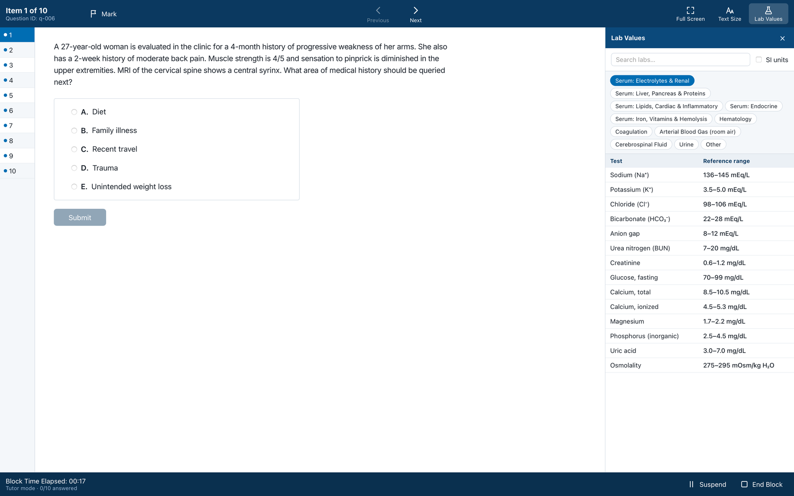
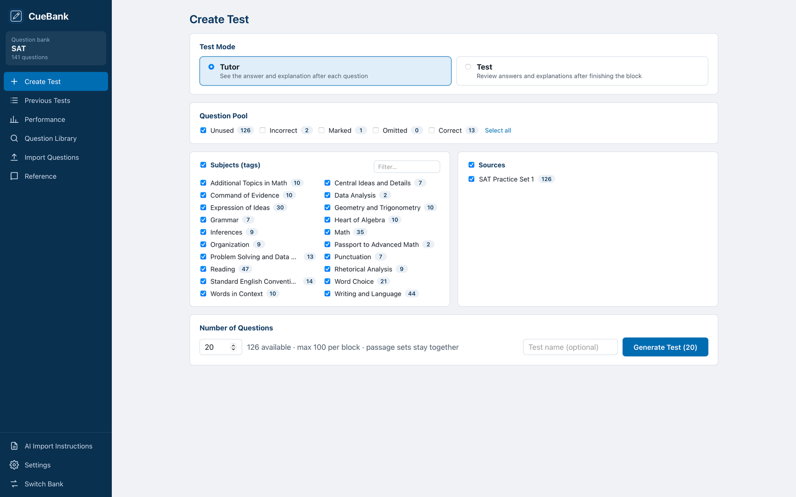
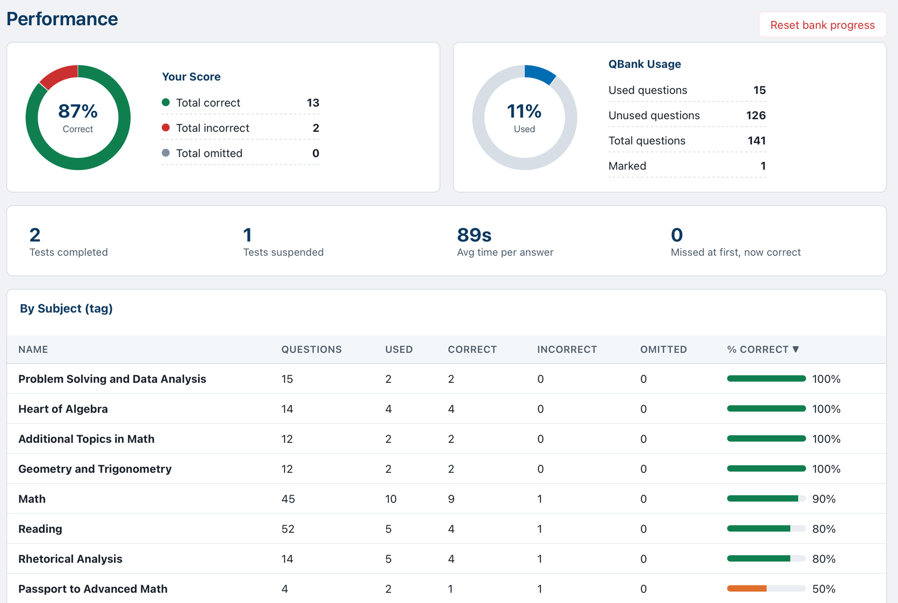

All your practice questions,
in one place.
CueBank turns the multiple-choice questions you already have into an exam-style question bank. Build practice blocks, study in Tutor or Test mode, and see which topics need more review.
☕ Buy me a coffee
How it works
Bring your own multiple choice questions from any source, in any format.
Easily format your questions into a CueBank-compatible file
CueBank gives you copy-ready instructions for ChatGPT, Claude, Gemini or any other LLM AI to turn your practice exams and multiple choice questions into a CueBank-compatible Markdown file in one step.
Import your formatted questions into a bank
Keep all your practice questions in one easy-to-use application, with question sorting by subject and topic tags. You can create separate banks for different exams, or keep all your questions in one bank.
Practice like it's test day
Make custom practice exams from your question bank. Select questions from your full bank, unused questions, or your prior incorrect questions. Filter by subjects/topics you want to study. Get detailed feedback after each answer or after your block is done.
See it in action
A clean, distraction-free layout that feels like the real exam.



Features
Everything you need to drill questions, nothing you don't.
Install help
CueBank isn't distributed through an app store yet, so your computer will ask you to confirm the first time you open it.
Mac: first launch
- Open the downloaded .dmg file and drag CueBank into Applications.
- Double-click CueBank. When macOS says it can't verify the developer, click Done.
- Open System Settings → Privacy & Security, scroll down to Security, and click Open Anyway next to CueBank. (The button appears for about an hour after you try to open the app.)
- Enter your Mac password, then click Open. After this, CueBank opens normally.
Windows: first launch
- Run the downloaded installer (CueBank_…_x64-setup.exe).
- If Windows shows "Windows protected your PC," click More info, then Run anyway.
- Follow the installer, then open CueBank from the Start menu.
Linux
- Download the .AppImage file.
- Make it executable (right-click → Properties → Allow executing, or
chmod +x CueBank_*.AppImage), then double-click it.
Does CueBank come with questions?
No. CueBank is the study tool; you bring the questions. Please only import questions you have the right to use, such as your own notes, class materials your instructor shared, or content you've licensed. The import screen includes a sample file so you can try it out first.
Where is my data stored? How do I back it up?
All your questions and data stay locally on your computer. You can use the Backup option to export your full bank and practice test results, and Restore to import it on a new computer.
Help keep CueBank growing
CueBank is built by one developer in their spare time. If it helps you study, a tip goes straight toward new features.
☕ Buy me a coffee